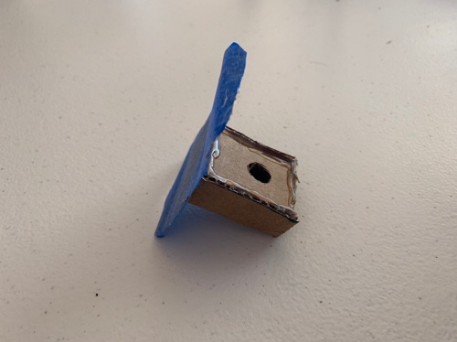

Brainstorming
One of my first ideas was actually this product. It occurred to me while cooking that there really isn’t a place to put your cooking utensils (ie spatula, ladle, whisk, etc). For me personally, I love to use chopsticks while cooking as I believe they are extremely versatile. I originally modeled it after a clothespin and had a small side plate that had a hole that would be have a rubber lining so to hold the chopsticks.
Scoping
Moving from brainstorming to scoping, I decided to change the design to something more robust because I believed that could lend to better stability while on the pot/pan. I made the tray removable for easier cleaning and made it more like a small container. Additionally, I added a silicone lining for the inside of the clip and thought the material should be stainless steel as it is food safe and used widely in cookware, This is where I changed the design to go over the handle instead of the side of the pot/pan.

Rapid Prototype 1 and 2
I found a beach towel clip that fit around all the pot handles I had so I used it for my rapid prototype. I had to made the sides flat so I could attach my tray/container. Originally, I made the container pretty short (1” height). However, this was not stable and made the chopsticks stick out horizontally too much. So I increased the depth to cover about ⅓ of the chopstick length which was around 3”.
CAD Designs
I started my CAD with a rough idea of how I wanted the general shape of the clip, based off of rough measurements from my beach clip. Additionally I tried a design with a torsion spring but disliked it. I also made the container have an open top for cleaning purposes and made it attach to the clip with magnets. Here, I also changed the metal from stainless steel to aluminum 6061 for weight purposes.